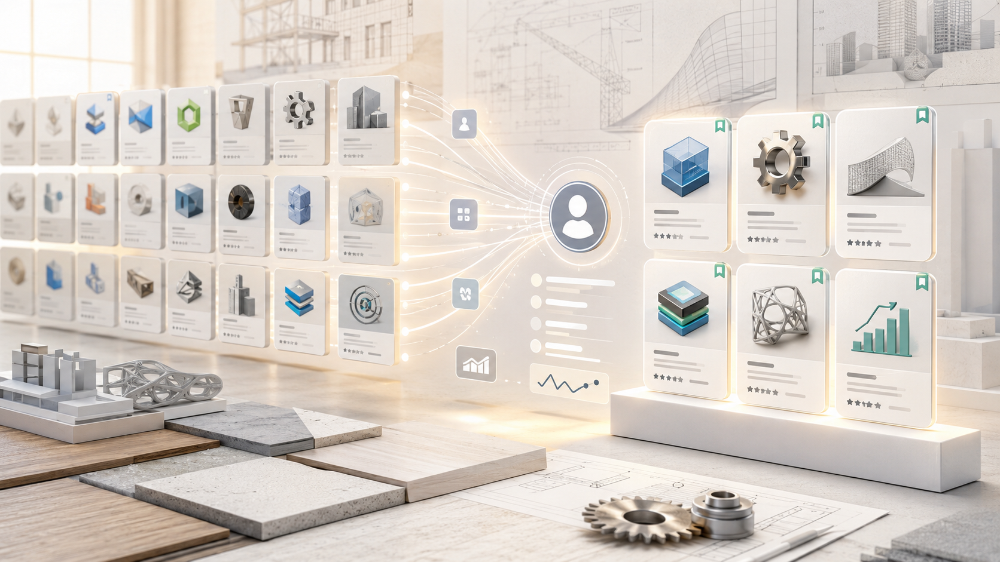

App Store Recommendation System
Personalized app discovery at scale using Wide & Deep neural networks — Autodesk App Store
Story Behind the Project
Autodesk develops industry-leading 3D design, engineering, and entertainment software across three core industries: Architecture, Engineering & Construction; Product Design & Manufacturing; and Media & Entertainment. The Autodesk App Store was the marketplace where users could "extend the power of Autodesk software" through apps and plug-ins built by internal and third-party developers — a catalog that had grown vastly over Autodesk's decades-long history.
But the marketplace had a problem: no personalization. Marketing analytics showed a wide gap between users creating an account in the Autodesk ecosystem and actually downloading or purchasing their first app. The culprit was clear — the sheer volume of offerings made it easy to feel overwhelmed, especially for new users who didn't know where to start.
This started as a hackathon week project. I built a proof of concept and pitched it to leadership, who saw the potential immediately and greenlit it as a full product initiative. I secured buy-in for resources, headcount, and budget — and went from hackathon prototype to leading a production launch.
Before a single model was trained, we did the work to understand what users actually needed. In November 2023, I co-led two user research workshops at Autodesk University alongside Yaoli Mao, Principal Experience Researcher at Autodesk. Using an interactive card game format, we gathered direct user input and feedback on how a recommendation system should work for them. The post-workshop analysis became the foundation on which the recommendation system was designed and built.
About
A personalized recommendation system for the Autodesk App Store, built from 0 to 1, that surfaces relevant third-party apps and integrations to users based on their behavior and context. The system uses a Wide & Deep neural network architecture to balance memorization of known patterns with generalization to new users and apps, serving real-time recommendations at scale with sub-100ms latency.
My Role
I led this project end to end — from the original hackathon proof of concept and leadership pitch, through user research, architecture, development, and production launch. I assembled and led a 12-person cross-functional team, coordinated across multiple internal teams and stakeholders, and mentored a summer intern as part of v1. I co-led two user research workshops at Autodesk University with Yaoli Mao (Principal Experience Researcher, Autodesk), using an interactive card game format to gather user input that directly shaped the system design. My technical ownership spanned the full system: model architecture, real-time ML inference infrastructure, feature store design, and data migration pipeline.
Key Details
- Wide & Deep neural network architecture with online feature serving for real-time inference
- Combined collaborative filtering with content-based signals for cold-start handling across 5,000+ apps
- Feature store and data migration pipeline built from scratch
- Real-time recommendations served via low-latency API backed by DynamoDB
Impact
- 13% lift in app downloads across ~708K daily active users
- <100ms end-to-end latency; <50ms p95 inference latency
- 40% reduction in model training time via feature store and pipeline improvements
- 25% reduction in infrastructure costs through data migration and architectural optimizations
Technologies
Links
Artifacts